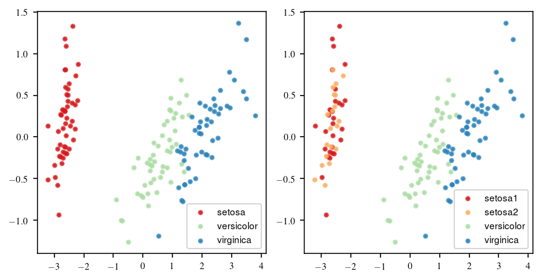
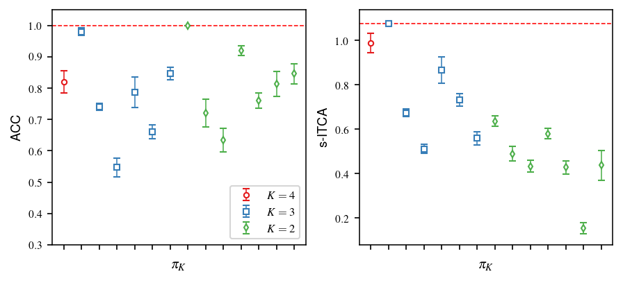

Tutorial on iris data¶
[1]:
%matplotlib inline
import numpy as np
import matplotlib as mpl
import matplotlib.pyplot as plt
from itca import itca, bidict, compute_y_dist
from sklearn import datasets
from sklearn.metrics import accuracy_score
from sklearn.model_selection import KFold
from sklearn.discriminant_analysis import LinearDiscriminantAnalysis
[2]:
LARGE_SIZE, MEDIUM_SIZE = 9, 7.5
params ={\
'backend': 'GTK3Agg',
'font.family': 'sans-serif',
'font.serif': ['Times', 'Palatino', 'New Century Schoolbook', 'Bookman', 'Computer Modern Roman'],
'font.sans-serif' : ['Helvetica', 'Avant Garde', 'Computer Modern Sans serif'],
#font.cursive : Zapf Chancery
#font.monospace : Courier, Computer Modern Typewriter
'text.usetex': True,
'axes.labelsize': LARGE_SIZE,
'axes.linewidth': .75,
'figure.subplot.left' : 0.175,
'figure.subplot.right': 0.95,
'figure.subplot.bottom': 0.15,
'figure.subplot.top': .95,
'figure.dpi':150,
'font.size': MEDIUM_SIZE,
'legend.fontsize': MEDIUM_SIZE,
'xtick.labelsize': MEDIUM_SIZE,
'ytick.labelsize': MEDIUM_SIZE,
'lines.markersize': 2,
'lines.linewidth':.75,
'savefig.dpi':600,
}
plt.rcParams.update(params)
[3]:
# load data
X, y_true = X, y_true = datasets.load_iris(return_X_y=True)
mapping = bidict({0:0, 1:0, 2:1, 3:2})
# random split the first class into two classes
y_obs = mapping.reverse_map(y_true)
Visualization of Iris data¶
Iris data consists of three classes (\(K^* = 3\)), (corresponding to three types of irises: setosa, versicolor, and virginica with 50 data points in each class.
The setosa class is linearly separable from the versicolor and virginica classes, while versicolor and virginica are not linearly separable from each other.
To prepare the dataset for class combination, we randomly split the setosa class into two equal-sized classes (setosa1 and setosa2), making the number of observed classes \(K_0=4\). Since the four classes are nominal, there are 14 allowed class combinations
[4]:
from sklearn.decomposition import PCA
pca = PCA(n_components=2, svd_solver='full')
X_pca = pca.fit(X).transform(X)
[5]:
lw=2
colors1 = ['#d7191c', '#abdda4','#2b83ba']
target_names1 = ['setosa', 'versicolor', 'virginica']
figure, axes = plt.subplots(1, 2)
for color, i, target_name in zip(colors1, [0, 1, 2], target_names1):
axes[0].scatter(X_pca[y_true==i, 0], X_pca[y_true==i, 1], color=color, alpha=0.8, lw=lw,
label =target_name)
axes[0].legend()
target_names2 = ['setosa1', 'setosa2', 'versicolor', 'virginica']
colors2 = ['#d7191c','#fdae61','#abdda4','#2b83ba']
for color, i, target_name in zip(colors2, [0, 1, 2, 3], target_names2):
axes[1].scatter(X_pca[y_obs==i, 0], X_pca[y_obs==i, 1], color=color, alpha=0.8, lw=lw,
label =target_name)
axes[1].legend()
plt.tight_layout()
figure.set_size_inches(6, 3)

Comparison of Accuracy and ITCA¶
[6]:
import collections
def eval_metrics(X, y, mapping, clf, metrics, kfolds=5):
"""
Compute metrics by k-fold cross-validation.
"""
kf = KFold(n_splits=kfolds, shuffle=True)
output = collections.defaultdict(list)
y_dist = compute_y_dist(y)
for train_index, test_index in kf.split(X):
X_train, X_test = X[train_index], X[test_index]
y_train, y_test = y[train_index], y[test_index]
ty = mapping.map(y_train)
clf.fit(X_train, ty)
y_pred = clf.predict(X_test)
for metric_name in metrics:
res = metrics[metric_name](y_test, y_pred, mapping, y_dist)
output[metric_name].append(res)
return output
def wrapper_acc(y_true, y_pred, mapping, y_dist):
return accuracy_score(mapping.map(y_true), y_pred)
# the 14 allowed combination
mappings = [
{0:0, 1:1, 2:2, 3:3}, # n_lcasses = 4
{0:0, 1:0, 2:1, 3:2}, # true n_classes = 3
{0:0, 1:1, 2:0, 3:2},
{0:0, 1:1, 2:2, 3:0},
{0:0, 1:1, 2:1, 3:2}, # n_classes = 2
{0:0, 1:1, 2:2, 3:1},
{0:0, 1:1, 2:2, 3:2},
{0:0, 1:0, 2:1, 3:1}, # n_classes = 2, 2+2, 3 in total
{0:0, 1:1, 2:0, 3:1},
{0:0, 1:1, 2:1, 3:0},
{0:0, 1:0, 2:0, 3:1}, # n_classes = 2, 1+3, 4 in total
{0:0, 1:0, 2:1, 3:0},
{0:0, 1:1, 2:0, 3:0},
{0:0, 1:1, 2:1, 3:1}
]
mappings = [bidict(mapping) for mapping in mappings]
y_dist = compute_y_dist(y_obs)
metrics = {"ACC": wrapper_acc,
"s-ITCA": itca}
lda = LinearDiscriminantAnalysis()
results_cv = {name: [] for name in metrics}
for ind, mapping in enumerate(mappings):
output = eval_metrics(X, y_obs, mapping, lda, metrics, kfolds=5)
for name in output:
results_cv[name].append(output[name])
[13]:
acc_mean = list(map(np.mean, results_cv["ACC"]))
acc_std = list(map(lambda x: np.std(x) / np.sqrt(5), results_cv["ACC"])) # Adjust the sd by the k folds
itca_mean = list(map(np.mean, results_cv["s-ITCA"]))
itca_std = list(map(lambda x: np.std(x) / np.sqrt(5), results_cv["s-ITCA"])) # Adjust the sd by the k folds
[14]:
fig, axes = plt.subplots(1, 2, sharex=True)
x = np.arange(len(acc_mean))
marker_size = 3.5
axes[0].errorbar(x[0], acc_mean[0], yerr = acc_std[0], linestyle="", marker="o", markersize=marker_size,
capsize=2.5, c="#e41a1c", label="$K=4$", mfc='w')
axes[0].errorbar(x[1:7], acc_mean[1:7], yerr = acc_std[1:7], linestyle="", marker="s", markersize=marker_size,
capsize=2.5, c="#377eb8", label="$K=3$", mfc='w')
axes[0].errorbar(x[7:], acc_mean[7:], yerr = acc_std[7:], linestyle="", marker="d", markersize=marker_size,
capsize=2.5, c="#4daf4a", label="$K=2$", mfc='w')
max_acc = np.max(acc_mean)
axes[0].axhline(max_acc, ls='--', color='r')
axes[0].set_ylabel("ACC")
axes[0].set_xticks(range(14))
axes[0].set_xticklabels([])
axes[0].set_xlabel("$\pi_K$")
axes[0].set_ylim([.3, 1.05])
axes[1].errorbar(x[0], itca_mean[0], yerr = itca_std[0], linestyle="", marker="o", markersize=marker_size,
capsize=2.5, c="#e41a1c", label="K=4", mfc='w')
axes[1].errorbar(x[1:7], itca_mean[1:7], yerr = itca_std[1:7], linestyle="", marker="s", markersize=marker_size,
capsize=2.5, c="#377eb8", label="K=3", mfc='w')
axes[1].errorbar(x[7:], itca_mean[7:], yerr = itca_std[7:], linestyle="", marker="d", markersize=marker_size,
capsize=2.5, c="#4daf4a", label="K=2", mfc='w')
max_itca = np.max(itca_mean)
axes[1].axhline(max_itca, ls='--', color='r')
axes[1].set_ylabel("s-ITCA", style='italic')
axes[1].set_xlabel("$\pi_K$")
axes[0].set_ylabel("ACC")
axes[0].legend(fontsize=8, loc="lower right")
fig.set_size_inches(6, 2.75)
plt.tight_layout()

Search the class combination that maximizes s-ITCA¶
[19]:
from itca import GreedySearch
gs = GreedySearch(class_type="nominal")
gs.search(X, y_obs, lda, verbose=False, early_stop=True)
gs.selected # s-ITCA sucessfully find the true class combination
[19]:
{0: 0, 1: 0, 2: 1, 3: 2}|ITAC=1.0620|